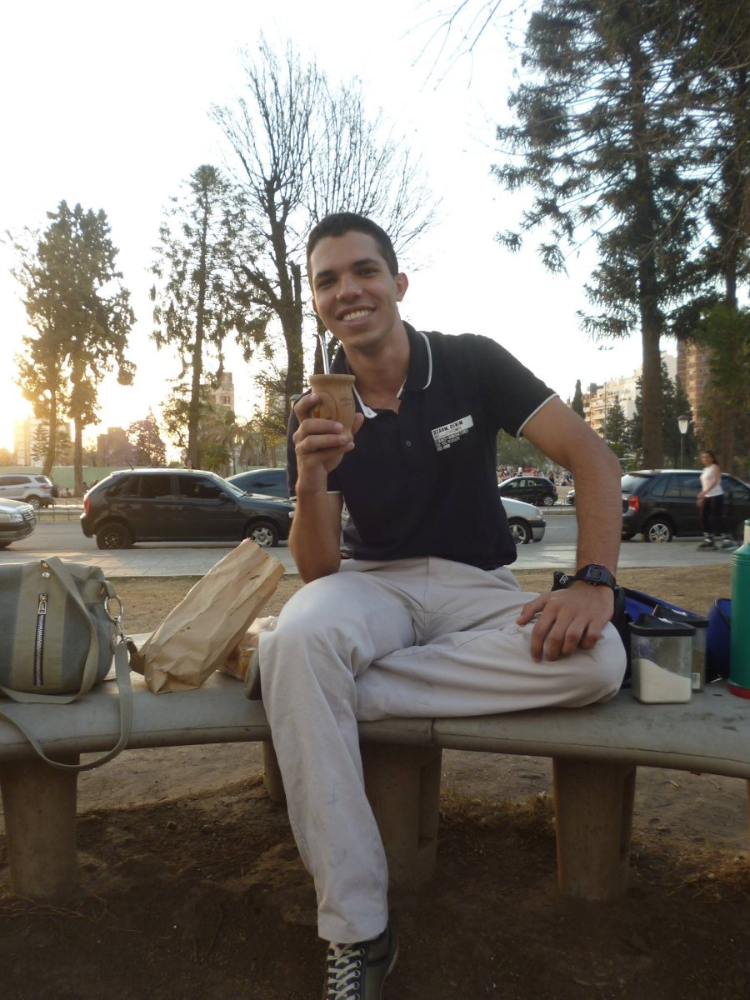

Posição, não lado.
O dia pede posição, não lado. O que chega de fora é clima. Mandato só existe depois do corte, e o corte é de quem escolhe.
O que entra de fora é clima. Mandato só existe depois do corte.
O dia pede posição, não lado. O que chega de fora é clima. Mandato só existe depois do corte, e o corte é de quem escolhe.
A praça ateniense oferece uma imagem para pensar a deliberação: cidadãos reunidos para decidir os rumos comuns. Nesta leitura editorial, a democracia exige um intervalo entre a opinião e a decisão, no qual a palavra possa ser confrontada e o impulso, interrompido.
A imagem não autoriza idealizar o passado. Serve, aqui, para formular uma exigência presente: quem fala à comunidade deve responder pelo que diz. A gratificação imediata das curtidas pode dispensar esse trabalho; a deliberação não deveria. Decidir exige escuta, confronto e, sobretudo, pausa.
Quando a democracia perde a capacidade de interromper seus próprios impulsos, abre espaço à demagogia: o eco amplificado de quem grita mais alto.
Parar é recuperar esse intervalo. Não se trata de recusar o voto, mas de restaurar a dignidade da deliberação que o antecede.
A separação dos poderes é uma arquitetura de contenção do poder político. Seu princípio pode ser dito sem cerimônia: quem faz a lei precisa de limites; quem a executa precisa responder por seus atos; quem julga precisa de independência e imparcialidade.
Acima de quem manda.
Que não é parte.
Que expira.
Que se presta.
Essas quatro exigências condensam a posição deste editorial: o poder deve encontrar limites que não dependam de sua própria vontade. Sem eles, o mandato abre caminho ao arbítrio. O limite, portanto, não é entrave ao mandato: é condição de sua legitimidade.
Decidir é atribuir peso aos dados disponíveis e assumir o que eles não resolvem. Em tempos de polarização algorítmica, vende-se a ilusão de certezas absolutas. A escolha, porém, não deixa de exigir responsabilidade quando falta certeza.
O que podemos usar para navegar na incerteza sem cair no cinismo ou no fanatismo? Três ferramentas:
Eu tomei as chaves do mundo hoje.
Passei anos fabricando oráculo e tesão.
O problema nunca foi merecimento.
As chaves são tomadas.
Você já está fabricando as suas.
A força criadora em carga não dilui.
Parar não é desistir da força.
É saber de onde ela vem antes de usá-la.

Editorial — Dr Lucas HR Almeida
Iniciativa VIA — Vida Integrada e Autônoma
WhatsApp Business Iniciativa VIA
Ciência e Tecnologia a serviço do Cuidado.